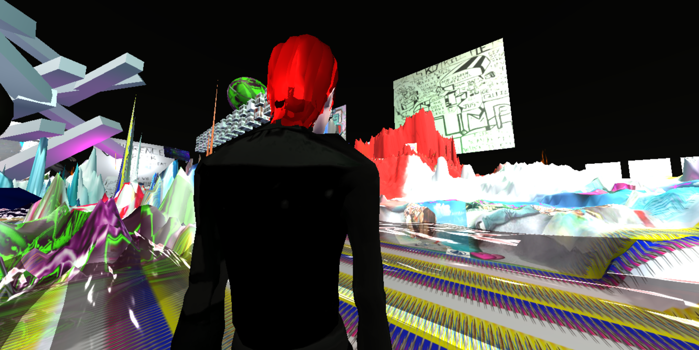
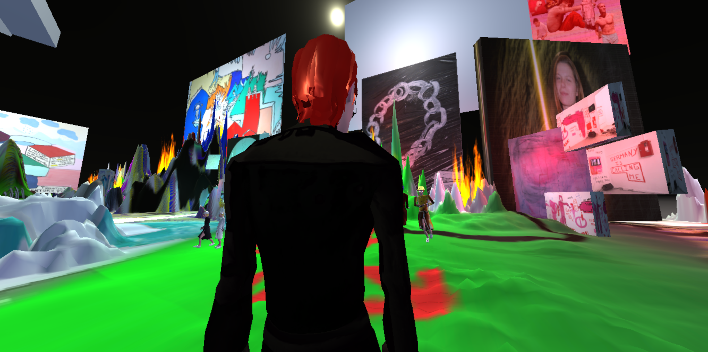
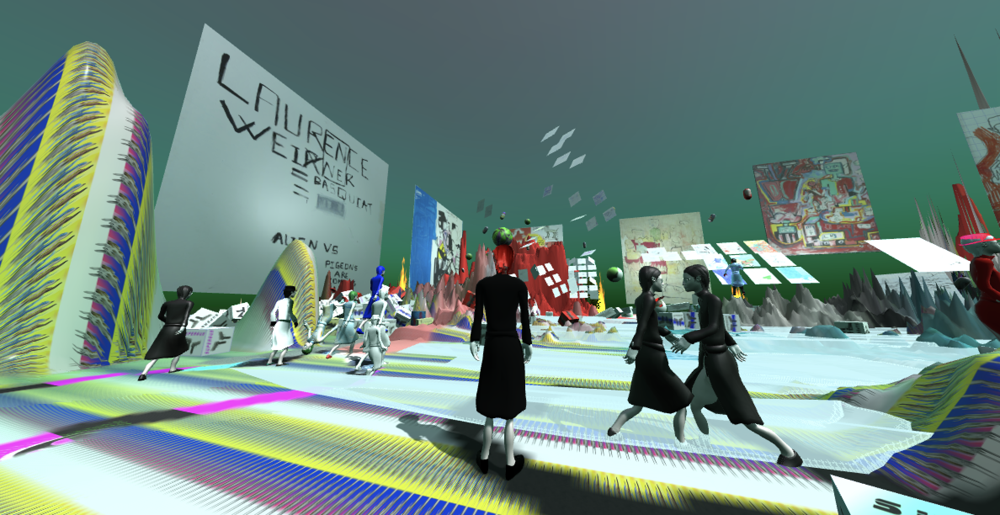

Is a sort of paradise portfolio in a immersive space in 3D, in it first version UNICREAM is online from the 2019. In UNICREAM, the player in real time, is free to watched the Sojbdor's archive, with paintings, drawings, installations. As a free museum online, you are free to explore this new world and meet eccentric people. The work provoke the questions : What is real? Where are you? How can we see virtual art today ?

View 1 of Unicream, video game, 2019

View 2 of Unicream, video game, 2019

View 3 of Unicream, video game, 2019

View 4 of Unicream, video game, 2019